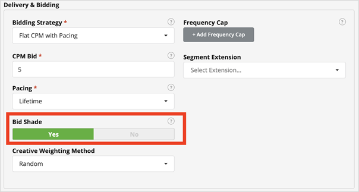

Es posible que esté intentando alcanzar un objetivo de impresión con un KPI principal de tasa de clics o tasa de visibilidad. Al reducir el CPM promedio, puede generar la misma cantidad de impresiones a un costo reducido.
Es posible que esté intentando alcanzar un objetivo de gasto con un KPI principal de tasa de clics o tasa de visibilidad. Al reducir su CPM promedio, puede generar más impresiones al mismo costo.
Si está tratando de lograr un costo por acción (por ejemplo, completar un formulario web, comprar, instalar una aplicación, etc.), reduciendo su CPM promedio y obteniendo una tasa de ganancia similar en el inventario de rendimiento, su CPA / CPI también bajará.
Cuando seleccione una estrategia de oferta que permita el bid shading, tendrá una opción para habilitar el bid shading en esa línea de pedido mediante el interruptor de bid shading. Todas las estrategias de oferta, a excepción del CPC, permitirán el bid shading en este momento. El valor predeterminado es "No".

Una vez habilitado, Bid Shading siempre se puede deshabilitar en el artículo de línea como cualquier otra función de oferta.
Adsmovil mantendrá aproximadamente el 10% de las ofertas como un "control" donde no ofertamos sombra para que pueda comparar los resultados con las impresiones que se ofertaron cómo bid shading.
Tiene un nivel adicional de control cuando habilita el bid shading para decidir qué tan agresivamente desea que ofertar.
| Opción | |
| Más agresivo | Esta opción ofrecerá un bid shading de manera más agresiva. Los clientes pueden esperar mayores ahorros de CPM con esta opción, pero también una mayor reducción en la tasa de ganancias en relación con el Grupo de control. |
| Normal (predeterminado) | Agresividad de bid shading de oferta normal. Este es el valor predeterminado para todos los artículos de línea. |
| Menos agresivo | Esta opción ofrecerá bid shading de forma menos agresiva. Los clientes pueden esperar ahorros de CPM más bajos con esta opción, pero también una reducción menor en la tasa de ganancias en relación con el Grupo de control |
A continuación, se presentan preguntas comunes que se pueden responder sobre el bid shading mediante informes :
P: ¿Cuánto me ahorró el bid shading en términos de CPM?
R: Ejecute un Informe de rendimiento y compare su CPM en las líneas de pedido en las que Bid Shade = Bid Shade con aquellas en las que Bid Shade = Grupo de control. Asegúrese de filtrar por tipo de subasta = primer precio, ya que el bid shading solo se produce en las subastas de primer precio. Usted debe informar a nivel de artículo de línea y no nada más alto en la jerarquía como la campaña o anunciante debido a la agregación a niveles más altos puede mostrar resultados engañosos.
P: ¿Cuánto redujo el bid shading mi tasa de ganancias?
R: Ejecute un Informe de rendimiento de la oferta y compare la tasa de ganancia en los artículos de línea donde el tono de la oferta = el bid shading con aquellos donde el tono de la oferta = el grupo de control.
P: ¿Cómo se modificó la combinación de inventario comprado mediante el bid shading?
R: Ejecute un Informe de inventario y compare las diferentes dimensiones del inventario en los artículos de línea donde el tono de la oferta = el bid shading con aquellos donde el tono de la oferta = el grupo de control.
P: ¿Cuánto matizó la oferta de Adsmovil en cada oferta específica?
R: Los bid_shade_reduction_micros en los registros de ofertas y los registros de ganancias responderán esta pregunta.
Algunos intercambios han implementado “bid shading del lado del SSP”, donde el SSP sombrea en nombre de sus socios DSP. Adsmovil evalúa el rendimiento de dicho bid shading continua y ha optado por el bid shading de ciertos intercambios. En estos escenarios, Adsmovil no ofertará sombra y no verá una diferencia entre el control y las impresiones bid shading en dicho inventario.
Para obtener una lista actualizada de los intercambios en los que Adsmovil utiliza el bid shading del lado del SSP del intercambio, consulte la lista de Fuentes de inventario
P: ¿Está disponible Bid Shading a nivel mundial?
R: si
P: ¿Se producirá el bid shading en los intercambios donde Adsmóvil haya optado por el bid shading del lado del SSP?
R: No. Para los intercambios con el bid shading del lado SSP habilitado, Adsmovil no aplicará también nuestro algoritmo de bid shading.
P: ¿El bid shading es una opción en los ajustes preestablecidos ?
R: No, actualmente no es una opción en los ajustes preestablecidos.
P: ¿En qué se diferencia de la estrategia de oferta "CPM optimizado con ritmo" ?
R: La estrategia de CPM optimizado con ritmo utiliza un algoritmo diferente para reducir el CPM, pero no es tan eficaz como la función de bid shading, ya que no optimiza la tasa de ganancias ni mantiene un perfil de inventario consistente.
P: ¿ Las líneas de pedido basadas en acuerdos permitirán el bid shading?
R: Las ofertas tienen su propio tipo de subasta y pueden ser del tipo 2do precio, 1er precio o Precio fijo. Cualquier oferta de tipo 1er precio aplicará bid shading, pero no se aplicará ningún segundo precio o precio fijo.
P: ¿Se puede utilizar el bid shading en una estrategia de oferta personalizada?
R: si
P: ¿Se puede utilizar el bid shading para la Programática garantizada ?
R: No, el bid shading no se debe utilizar en Programática garantizada.
P: ¿Están disponibles los informes para el bid shading en los informes de dominios y aplicaciones móviles?
R: Actualmente no.
P: ¿Hay algún cargo por el bid shading?
R: Sí, hable con su account manager de Adsmovil sobre el costo asociado con este producto.